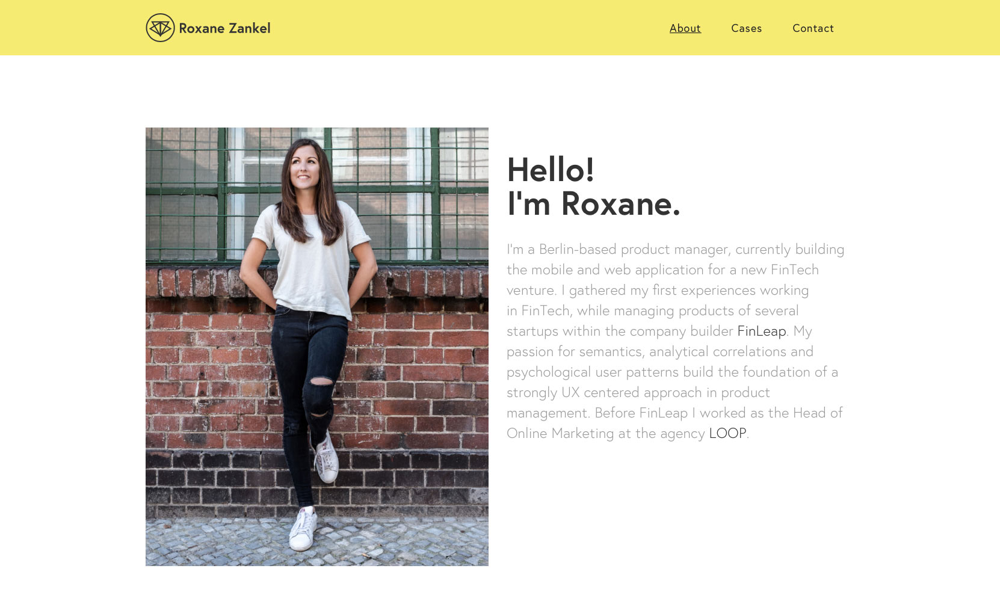

Table of Contents
1.Introduction
2.GUI design
3.Web site refrences
4.Wireframes
5.Mockups
6.Code Validation Testing
7.Conclusion
8.Refrences
1.Introduction
This web site is a personal portfolio.It is desigined by using HTML5 and CSS properties.This webpage contains 6 web pages.The first page is landing page index.html,which is home page of the wesite.Second page is about.html which contains a short biography.cv.html is the third page which contains resume and expreience, this web page contains two columns and flex property is used.And in next page ,social.html it contains the link of the the social networks.And in last contact.html the is a form to send message and a map location.While making UI (User Interface) this is based on Google's Material Design.Diffrent CSS properties is being used to make this website.2.UI design (User Interface design)
UI design is the design of user interfaces of the web pages that shows how a web site looks .While making this web site UI of this is created in such a way that it will be user friendly to the users and easy to navigate.To make this web page visual output better different HTML and CSS property is used.To make a good UI i have made good color combination as color combination plays a vital role to make a web site good looking i have added a light blue background picture.This web site contain a light header in the top of the page and a image logo in the left side of the header.Below to the header there is navigation bar which have different menus.The color of the menus changes when hover is done in the menu.This web page contains a footer which have social media links.To make this web site more attractive animation and other features like hover effect is being used.3.Web site refrences
So,to design this web page,a sample is taken by looking at the webpage which is shown below.This web page reference is taken for the about page .As the content displayed in this page was good so ihave taken the refrence from this web page.
4.Wireframes
Before designing the web page the sketch of the web is made that will look like after the completion of the web page.So wirefarme is made shown that we can make the design by looking at the wireframe.Wire frame makes the web designing easy as we can take refrence from it will designing.So,the wire farmes that were made for this website is shown below:
Home Screen wireframe
 >
>About Screen wireframe
 >
>Contact Screen wireframe
 >
>CV Screen wireframe
 >
>Social Screen wireframe
5.Mockups
Mockup is the model or the replica of the webpages.As this web page is device resonsive it is user friendly in every devices and compatible in new devices like smartphones and tablets.Some of the screeen mock ups are shown below.

PC,laptops screen mockups

Mobile screen mockup

Tablets screen mockup
6.Code Validation Testing
Testing of the html files is done by using a online validation software.Some html files had errors and they were corrected.The evidence of sucessfull validation for assibility is shown below.
Home Page

About Page

CV Page

Social

Report Page

Contact Page
7.MyExperience
The experience in designing own portfolio was quite learningful for me. During this session i build the basic concepts of HTML and CSS. The main focus of mine in this session was to design the portfolio using material design and make it campotible in different devices like mobiles, laptops, tablets, etc. Learning and doing the assingment together was quite fruitful for me. The concepts which i wasn't clear in the class, i made it clear during this session. In this term, i learned some basic concepts like flex properties, animations, transistions, Google API fonts,CSS selectors etc and their functions in respective postions. Mobile responsive term worked very well in my project. The interference and colors used in the site are user friendly. Use of appropriate fontsize and proper color variations on the site made user to read the contents of the page more easier. As i have the knowlege in php also, if there was a bit of more time, i woulld have used php in the site and made it to work with the local host. CSS doesnt provide more animation options, using it it is difficult to make the objects animate with more options. As we will learn Javascript in second term, If i had knowlege about it, i would use more attractive animation options to follow google material design concepts.8.References
w3schools. 2018. CSS Navigation Bar. [ONLINE] Available at: https://www.w3schools.com/css/css_navbar.asp. [Accessed 1 April 2018].
w3schools. 2018. CSS Styling Images. [ONLINE] Available at: https://www.w3schools.com/css/css3_images.asp. [Accessed 1 April 2018].
w3schools. 2018. CSS Buttons. [ONLINE] Available at: https://www.w3schools.com/css/css3_buttons.asp. [Accessed 4 April 2018].
w3schools. 2018. CSS Flexbox. [ONLINE] Available at: https://www.w3schools.com/css/css3_flexbox.asp. [Accessed 4 April 2018].
w3schools. 2018. CSS Flexbox. [ONLINE] Available at: https://www.w3schools.com/css/css3_flexbox.asp. [Accessed 4 April 2018].
w3schools. 2018. CSS Animations. [ONLINE] Available at: https://www.w3schools.com/css/css3_animations.asp. [Accessed 6 April 2018].
Googlefonts. 2018. googlefonts. [ONLINE] Available at: https://fonts.google.com/specimen/Montserrat. [Accessed 6 April 2018].
responsivedesign.is. 2018. media queries for common device breakpoints. [ONLINE] Available at: https://responsivedesign.is/develop/browser-feature-support/media-queries-for-common-device-breakpoints/. [Accessed 18 April 2018].